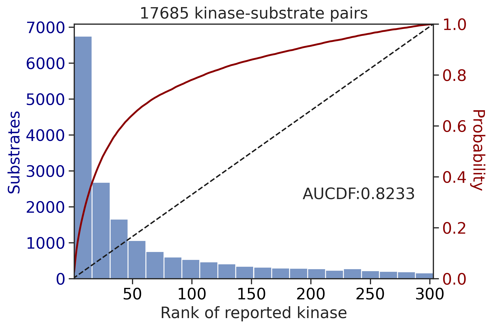

from katlas.imports import *
import pickle,pandas as pd, seaborn as sns
from matplotlib import pyplot as pltPlot AUCDF
Overall evaluation of PSSMs in the PSP dataset
In this notebook, we will evaluate PSSMs derived from two methods:PSPA and CDDM, using kinase-substrate datasets from PhosphoSitePlus (PSP). We will use AUCDF (Area Under Cumulative Distribution Function) to evaluate. AUCDF was previously introduced to evaluate PSSMs in the paper An atlas of substrate specificities for the human serine/threonine kinome.
Setup
Get kinase idx map
info = Data.get_kinase_info().query('pseudo=="0"')
info = info[['kinase','ID_coral','ID_HGNC']].map(lambda x: x.upper())
kinase_map = {}
for idx, row in info.iterrows():
# Add each of the different kinase name formats to the map
kinase_map[row['ID_coral']] = row['kinase']
kinase_map[row['ID_HGNC']] = row['kinase']
# Ensure the kinase name itself is also in the map
kinase_map[row['kinase']] = row['kinase']
kinase_map['ABL'] = 'ABL1'
kinase_map['HER2'] = 'ERBB2'
kinase_map['ETK'] = 'BMX'
kinase_map['MKK6'] = 'MAP2K6'
kinase_map['MKK4'] = 'MAP2K4'
kinase_map['MKK3'] = 'MAP2K3'
kinase_map['MKK7'] = 'MAP2K7'
kinase_map['ARG'] = 'ABL2'Uncheck below to save and load kinase_map.pkl
# import pickle
# with open('raw/kinase_map.pkl', 'wb') as file:
# pickle.dump(kinase_map, file)
# with open('raw/kinase_map.pkl', 'rb') as file:
# loaded_dict = pickle.load(file)Load kinase-substrate data from PSP
# load kinase-substrate pairs from PSP
psp = pd.read_csv('raw/PSP_Kinase_Substrate_Dataset.csv')psp.head()| GENE | KINASE | KIN_ACC_ID | KIN_ORGANISM | SUBSTRATE | SUB_GENE_ID | SUB_ACC_ID | SUB_GENE | SUB_ORGANISM | SUB_MOD_RSD | SITE_GRP_ID | site_seq | DOMAIN | IN_VIVO_RXN | IN_VITRO_RXN | CST_CAT# | |
|---|---|---|---|---|---|---|---|---|---|---|---|---|---|---|---|---|
| 0 | Dyrk2 | DYRK2 | Q5U4C9 | mouse | NDEL1 | 83431.0 | Q9ERR1 | Ndel1 | mouse | S336 | 1869686801 | LGSsRPSsAPGMLPL | NaN | X | NaN | |
| 1 | Pak2 | PAK2 | Q64303 | rat | MEK1 | 170851.0 | Q01986 | Map2k1 | rat | S298 | 448284 | RtPGRPLsSYGMDSR | Pkinase | X | 9128; 98195 | |
| 2 | Pak2 | PAK2 | Q64303 | rat | PRKD1 | 85421.0 | Q9WTQ1 | Prkd1 | rat | S203 | 449896 | GVRRRRLsNVsLTGL | NaN | X | NaN | |
| 3 | Pak2 | PAK2 | Q64303 | rat | prolactin | 24683.0 | P01237 | Prl | rat | S206 | 451732 | IRCLRRDsHKVDNYL | Hormone_1 | X | NaN | |
| 4 | Pak2 | PAK2 | Q64303 | rat | prolactin | 5617.0 | P01236 | PRL | human | S207 | 451732 | LHCLRRDsHKIDNYL | Hormone_1 | X | NaN |
As there are some sequences in ‘site_seq’ column that do not have s/t/y at the center position, we need to remove them.
# For site sequence
psp = psp.loc[psp.site_seq.str[7].isin(list('stySTY'))]We also notice that the kinase name in ‘KINASE’ column is not always consistent (e.g., gene name and protein name are mixed in some cases), so we need to convert the kinase name to a consistent name.
# for isoform, suppose they have similar recognition pattern; drop the isoform # and take the kinase name
psp.KINASE = psp.KINASE.str.split(' ').str[0].str.upper()
# for fusion form of kinase,get the second item
psp.KINASE = psp.KINASE.apply(lambda x: x.split('-')[1] if '-' in x else x)
# map various kinase name (coral ID, gene name) to a common name
psp['kinase'] = psp.KINASE.map(kinase_map)Check kinase that is not mapped:
# kinase not mapped
psp[psp.kinase.isna()].KINASE.value_counts()[:10]KINASE
CK2B 20
VEGFR2 15
AMPKB1 15
UL97 14
ILK 13
PKM 12
PIK3CA 11
AMPKG2 10
CSFR 10
VEGFR1 7
Name: count, dtype: int64# drop kinase not mapped
psp = psp.dropna(subset='kinase')# drop duplicates
psp = psp[['site_seq','kinase']].drop_duplicates()psp.site_seq.str[7].value_counts()site_seq
s 13543
t 4349
y 3049
Name: count, dtype: int64Filter sites and kinase for PSPA scoring
import pandas as pd, numpy as np
from tqdm import tqdmref_y = Data.get_pspa_tyr_norm()
ref_st = Data.get_pspa_st_norm()TK = ref_y.index.str.split('_').str[0].tolist()
ST = ref_st.index.str.split('_').str[0].tolist()We will use two kinds of inputs for PSPA evaluation:
- All capital (the official method from the Nature paper.)
- With lowercase indicating phosphorylation status
# filter samples, include only available kinase from the reference for scoring
df_st = psp[psp.kinase.isin(ref_st.index)].copy()
df_y = psp[psp.kinase.isin(ref_y.index)].copy()
# keep ST sites
df_st = df_st[df_st.site_seq.str[7].isin(list('stST'))]
# keep Y sites
df_y = df_y[df_y.site_seq.str[7].isin(list('yY'))]df_st.site_seq.str[7].value_counts()site_seq
s 13398
t 4287
Name: count, dtype: int64df_y.site_seq.str[7].value_counts()site_seq
y 2904
Name: count, dtype: int64# convert site sequence to capital, for percentile calculation
df_st['site_seq_upper'] = df_st['site_seq'].str.upper()
df_y['site_seq_upper'] = df_y['site_seq'].str.upper()df_st.head()| site_seq | kinase | site_seq_upper | |
|---|---|---|---|
| 0 | LGSsRPSsAPGMLPL | DYRK2 | LGSSRPSSAPGMLPL |
| 1 | RtPGRPLsSYGMDSR | PAK2 | RTPGRPLSSYGMDSR |
| 2 | GVRRRRLsNVsLTGL | PAK2 | GVRRRRLSNVSLTGL |
| 3 | IRCLRRDsHKVDNYL | PAK2 | IRCLRRDSHKVDNYL |
| 4 | LHCLRRDsHKIDNYL | PAK2 | LHCLRRDSHKIDNYL |
Multiply score
y_param_multiply = param_PSPA_y
st_param_multiply = param_PSPA_st# multiply score on all capital
st_mul_up = predict_kinase_df(df_st,'site_seq_upper',**st_param_multiply)
# multiply score on phosphorylated substrates
st_mul_lo = predict_kinase_df(df_st,'site_seq',**st_param_multiply)input dataframe has a length 17685
Preprocessing
Finish preprocessing
Merging reference
Finish merging100%|██████████| 303/303 [00:02<00:00, 135.63it/s]input dataframe has a length 17685
Preprocessing
Finish preprocessing
Merging reference
Finish merging100%|██████████| 303/303 [00:02<00:00, 131.82it/s]# multiply score on all capital
st_mul_up = predict_kinase_df(df_st,'site_seq_upper',**st_param_multiply)
# multiply score on phosphorylated substrates
st_mul_lo = predict_kinase_df(df_st,'site_seq',**st_param_multiply)input dataframe has a length 17685
Preprocessing
Finish preprocessing
Merging reference
Finish merging100%|██████████| 303/303 [00:02<00:00, 137.92it/s]input dataframe has a length 17685
Preprocessing
Finish preprocessing
Merging reference
Finish merging100%|██████████| 303/303 [00:02<00:00, 132.47it/s]# multiply score on all capital
y_mul_up = predict_kinase_df(df_y,'site_seq_upper',**y_param_multiply)
# multiply score on phosphorylated substrates
y_mul_lo = predict_kinase_df(df_y,'site_seq',**y_param_multiply)input dataframe has a length 2904
Preprocessing
Finish preprocessing
Merging reference
Finish merging100%|██████████| 93/93 [00:00<00:00, 319.46it/s]input dataframe has a length 2904
Preprocessing
Finish preprocessing
Merging reference
Finish merging100%|██████████| 93/93 [00:00<00:00, 349.33it/s]df_st| site_seq | kinase | site_seq_upper | |
|---|---|---|---|
| 0 | LGSsRPSsAPGMLPL | DYRK2 | LGSSRPSSAPGMLPL |
| 1 | RtPGRPLsSYGMDSR | PAK2 | RTPGRPLSSYGMDSR |
| 2 | GVRRRRLsNVsLTGL | PAK2 | GVRRRRLSNVSLTGL |
| 3 | IRCLRRDsHKVDNYL | PAK2 | IRCLRRDSHKVDNYL |
| 4 | LHCLRRDsHKIDNYL | PAK2 | LHCLRRDSHKIDNYL |
| ... | ... | ... | ... |
| 23276 | QRVLDtssLtQsAPA | ULK2 | QRVLDTSSLTQSAPA |
| 23277 | DtssLtQsAPAsPtN | ULK2 | DTSSLTQSAPASPTN |
| 23278 | LAQPINFsVSLSNSH | ULK2 | LAQPINFSVSLSNSH |
| 23279 | ESsPILTsFELVKVP | ULK2 | ESSPILTSFELVKVP |
| 23280 | THRRMVVsMPNLQDI | ULK2 | THRRMVVSMPNLQDI |
17685 rows × 3 columns
Sum score
y_param_sum = {'ref':Data.get_pspa_tyr_norm(), 'func': sumup}
st_param_sum = {'ref':Data.get_pspa_st_norm(), 'func': sumup}# sum score on all capital
st_sum_up = predict_kinase_df(df_st,'site_seq_upper',**st_param_sum)
# sum score on phosphorylated substrates
st_sum_lo = predict_kinase_df(df_st,'site_seq',**st_param_sum)input dataframe has a length 17685
Preprocessing
Finish preprocessing
Merging reference
Finish merging
input dataframe has a length 17685
Preprocessing
Finish preprocessing
Merging reference
Finish merging# sum score on all capital
y_sum_up = predict_kinase_df(df_y,'site_seq_upper',**y_param_sum)
# sum score on phosphorylated substrates
y_sum_lo = predict_kinase_df(df_y,'site_seq',**y_param_sum)input dataframe has a length 2904
Preprocessing
Finish preprocessing
Merging reference
Finish merging
input dataframe has a length 2904
Preprocessing
Finish preprocessing
Merging reference
Finish mergingPlot differences of all-capital and phosphorylated
df_y['acceptor'] = df_y.site_seq_upper.str[7]palette = get_color_dict(['S','T','Y'],'tab20')sns.set(rc={"figure.dpi":300, 'savefig.dpi':300})
sns.set_context('notebook')
sns.set_style("ticks")k = 'SYK'
xmin,xmax = y_mul_lo[k].min()-0.1, y_mul_lo[k].max()+0.1
plot_hist(y_mul_up,k,hue = df_y.acceptor,palette=palette)
plt.title(f'{k}, without considering phospho-priming')
plt.xlim(xmin,xmax);
plot_hist(y_mul_lo,k,hue = df_y.acceptor,palette=palette)
plt.title(f'{k}, with considering phospho-priming')
plt.xlim(xmin,xmax);

Get score rank
# get rank of multiply score for all capital
y_rnk_mul_up = y_mul_up.rank(axis=1,ascending=False)
st_rnk_mul_up = st_mul_up.rank(axis=1,ascending=False)
# get rank of multiply score for phosphorylated
y_rnk_mul_lo = y_mul_lo.rank(axis=1,ascending=False)
st_rnk_mul_lo = st_mul_lo.rank(axis=1,ascending=False)# get rank of sum score for all capital
y_rnk_sum_up = y_sum_up.rank(axis=1,ascending=False)
st_rnk_sum_up = st_sum_up.rank(axis=1,ascending=False)
# get rank of sum score for all capital
y_rnk_sum_lo = y_sum_lo.rank(axis=1,ascending=False)
st_rnk_sum_lo = st_sum_lo.rank(axis=1,ascending=False)As the reference for percentile calculation is calculated based on all-capital sequences, we will calculate percentile score and its rank only for the uppercase one.
For the lowercase, it should be also noted that the phosphorylation status from PSP might not be accurate, as it includes all high-throughput phosphorylation and low-throughput phosphorylation sites.
Percentile
Percentile calculation, for all capital only:
# get percentile based on percentile_reference
y_pct_ref = Data.get_pspa_tyr_pct()
st_pct_ref = Data.get_pspa_st_pct()
y_pct = get_pct_df(y_mul_up,y_pct_ref)
st_pct = get_pct_df(st_mul_up,st_pct_ref)
# get percentile rank across kinases
y_pct_rnk = y_pct.rank(axis=1,ascending=False)
st_pct_rnk = st_pct.rank(axis=1,ascending=False)100%|██████████| 93/93 [00:00<00:00, 2401.17it/s]
100%|██████████| 303/303 [00:00<00:00, 310.19it/s]Match values
def match_values(df,rnk):
return pd.Series([rnk.at[k,v] for k,v in df.kinase.items()],index=df.index)# merge rank values to df
df_y['y_rnk_mul_up'] = match_values(df_y,y_rnk_mul_up)
df_y['y_rnk_mul_lo'] = match_values(df_y,y_rnk_mul_lo)
df_y['y_rnk_sum_up'] = match_values(df_y,y_rnk_sum_up)
df_y['y_rnk_sum_lo'] = match_values(df_y,y_rnk_sum_lo)# merge rank values to df
df_st['st_rnk_mul_up'] = match_values(df_st,st_rnk_mul_up)
df_st['st_rnk_mul_lo'] = match_values(df_st,st_rnk_mul_lo)
df_st['st_rnk_sum_up'] = match_values(df_st,st_rnk_sum_up)
df_st['st_rnk_sum_lo'] = match_values(df_st,st_rnk_sum_lo)# for uppercase only
df_y['pct'] = match_values(df_y,y_pct)
df_y['pct_rnk'] = match_values(df_y,y_pct_rnk)
df_st['pct'] = match_values(df_st,st_pct)
df_st['pct_rnk'] = match_values(df_st,st_pct_rnk)df_y.head()| site_seq | kinase | site_seq_upper | acceptor | y_rnk_mul_up | y_rnk_mul_lo | y_rnk_sum_up | y_rnk_sum_lo | pct | pct_rnk | |
|---|---|---|---|---|---|---|---|---|---|---|
| 1516 | KETEGQFyNYFPN__ | ITK | KETEGQFYNYFPN__ | Y | 8.0 | 8.0 | 11.0 | 11.0 | 83.472 | 17.5 |
| 1517 | ETLVIALyDYQTNDP | ITK | ETLVIALYDYQTNDP | Y | 25.0 | 25.0 | 31.0 | 31.0 | 39.262 | 26.0 |
| 1518 | PNEGDNDyIIPLPDP | PDGFRB | PNEGDNDYIIPLPDP | Y | 26.0 | 26.0 | 43.5 | 43.5 | 98.237 | 15.0 |
| 1519 | ERKEVsKysDIQRsL | PDGFRB | ERKEVSKYSDIQRSL | Y | 44.0 | 63.0 | 60.0 | 70.0 | 58.742 | 36.0 |
| 1520 | LDTSSVLyTAVQPNE | PDGFRB | LDTSSVLYTAVQPNE | Y | 58.0 | 58.0 | 71.0 | 71.0 | 58.524 | 59.0 |
Percentile
sns.set(rc={"figure.dpi":300, 'savefig.dpi':300})
sns.set_context('notebook')
sns.set_style("ticks")
get_AUCDF(df_y,'pct',reverse=True,xlabel='Percentile of reported kinase')
0.613949614139531get_AUCDF(df_st,'pct',reverse=True,xlabel='Percentile of reported kinase')0.7996590541217666Percentile rank
get_AUCDF(df_y,'pct_rnk')0.6021502629886102get_AUCDF(df_st,'pct_rnk')0.7903312239631667Multiply score on all capital
get_AUCDF(df_y,'y_rnk_mul_up')
0.6240460933796205get_AUCDF(df_st,'st_rnk_mul_up')0.8225713446901245Multiply score on phosphorylated
get_AUCDF(df_y,'y_rnk_mul_lo')
0.6373005243034091get_AUCDF(df_st,'st_rnk_mul_lo')
0.8232876176843243Sum score on all capital
get_AUCDF(df_y,'y_rnk_sum_up')
0.6115071915765649get_AUCDF(df_st,'st_rnk_sum_up')
0.8151544558555669Sum score on phosphorylated
get_AUCDF(df_y,'y_rnk_sum_lo')0.6251077799990844get_AUCDF(df_st,'st_rnk_sum_lo')
0.8235627655503237Plot average rank for each kinase
The bar plot will reflect how accurate the prediction is for each kinase. The lower the y axis value is, the better.
cnt_y = df_y.kinase.value_counts()
cnt_st = df_st.kinase.value_counts()df_y['count'] = df_y.kinase.map(cnt_y)
df_st['count'] = df_st.kinase.map(cnt_st)dd_y = df_y.query('count>=20')
dd_st = df_st.query('count>=20')bar_param = {'dots':False, 'fontsize':10, 'figsize':(17,3),'ascending':True}plot_bar(dd_y,'y_rnk_mul_up','kinase',**bar_param)
plt.ylabel('Rank with all capital');
plot_bar(dd_y,'y_rnk_mul_lo','kinase',**bar_param)
plt.ylabel('Rank with phosphorylation status');

plot_bar(dd_st,'st_rnk_mul_up','kinase',**bar_param)
plt.ylabel('Rank with all capital');
plot_bar(dd_st,'st_rnk_mul_lo','kinase',**bar_param)
plt.ylabel('Rank with phosphorylation status');
Statistical analysis
dd_y = dd_y.rename(columns={'y_rnk_mul_lo':'phosphorylated','y_rnk_mul_up':'all-capital'})
dd_st = dd_st.rename(columns={'st_rnk_mul_lo':'phosphorylated','st_rnk_mul_up':'all-capital'})import scipy.stats as statsdelta_y = dd_y.groupby('kinase')[['all-capital', 'phosphorylated']].mean()
delta_st = dd_st.groupby('kinase')[['all-capital', 'phosphorylated']].mean()delta_y['diff'] = (delta_y['all-capital'] - delta_y['phosphorylated'])/delta_y['all-capital']
delta_st['diff'] = (delta_st['all-capital'] - delta_st['phosphorylated'])/delta_st['all-capital']delta_y.sort_values('diff',ascending=False).head()| all-capital | phosphorylated | diff | |
|---|---|---|---|
| kinase | |||
| PTK2 | 30.382979 | 15.170213 | 0.500700 |
| SYK | 20.233333 | 12.011111 | 0.406370 |
| ZAP70 | 25.238095 | 16.119048 | 0.361321 |
| EGFR | 32.346457 | 24.929134 | 0.229309 |
| BMX | 41.250000 | 31.800000 | 0.229091 |
def t_test(group):
t_stat, p_val = stats.ttest_rel(group['all-capital'], group['phosphorylated'])
return pd.Series({'t-statistic': t_stat, 'p-value': p_val})# Apply the t-test function to each group
ttest_y = dd_y.groupby('kinase').apply(t_test)
ttest_st = dd_st.groupby('kinase').apply(t_test)y_rnk_statistics = pd.concat([delta_y,ttest_y],axis=1)
st_rnk_statistics = pd.concat([delta_st,ttest_st],axis=1)y_rnk_statistics.head()| all-capital | phosphorylated | diff | t-statistic | p-value | |
|---|---|---|---|---|---|
| kinase | |||||
| ABL1 | 27.249110 | 30.587189 | -0.122502 | -4.800813 | 2.575967e-06 |
| ABL2 | 26.205882 | 28.352941 | -0.081930 | -1.498866 | 1.434148e-01 |
| BMX | 41.250000 | 31.800000 | 0.229091 | 2.516893 | 2.097901e-02 |
| BTK | 50.185185 | 50.629630 | -0.008856 | -0.676868 | 5.044680e-01 |
| EGFR | 32.346457 | 24.929134 | 0.229309 | 6.082135 | 1.314753e-08 |
Plot all-capital vs. phosphorylated
def plot_rnk(df,value_cols,group,figsize,order=None,fontsize=18,rotation=90,title=None,**kwargs):
# Prepare the dataframe for plotting
# Melt the dataframe to go from wide to long format
df_melted = df.melt(id_vars=group, value_vars=value_cols, var_name='Ranking', value_name='Value')
plt.figure(figsize=figsize)
# Create the bar plot
sns.barplot(data=df_melted, x=group, y='Value', hue='Ranking',order=order,
capsize=0.1,errwidth=1.5,errcolor='gray', # adjust the error bar settings
**kwargs)
# Increase font size for the x-axis and y-axis tick labels
plt.tick_params(axis='x', labelsize=fontsize) # Increase x-axis label size
plt.tick_params(axis='y', labelsize=fontsize) # Increase y-axis label size
# Modify x and y label and increase font size
plt.xlabel('', fontsize=fontsize)
plt.ylabel('Rank of kinases (count≥20)', fontsize=fontsize)
# Rotate X labels
plt.xticks(rotation=rotation)
# Plot titles
if title is not None:
plt.title(title, fontsize=fontsize)
plt.gca().spines[['right', 'top']].set_visible(False)
# plt.legend(title='Substrate', fontsize=fontsize-1, title_fontsize=fontsize-1)
plt.legend(fontsize=fontsize)y_order = y_rnk_statistics.sort_values('diff',ascending=False).index
st_order = st_rnk_statistics.sort_values('diff',ascending=False).indexplot_rnk(dd_y,['all-capital','phosphorylated'],'kinase',figsize=(24,5),order=y_order)From the graph, it seems PTK2,SYK,ZAP70,EGFR,BMX rank increased a lot when considering phosphorylation status in the calculation. These kinases are known to prefer phosphopriming.
plot_rnk(dd_st,['all-capital','phosphorylated'],'kinase',figsize=(24,5),order=st_order,fontsize=14)
From the graph, it seems GRK, CK2, CK1s, GSK3s rank increased a lot when considering phosphorylation status in the calculation. These kinases are known to prefer phosphopriming.
CDDM scoring
As PSSMs from CDDM contains both tyrosine kinases and Ser/Thr kinases, we need to calculate AUCDF separately for each type.
set_sns()param_CDDM['ref']['0Y'].hist(bins=50)
plt.title('Distribution of 0Y ratio');
# Get TK and ST kinase list
TK = param_CDDM['ref']['0Y']>0.3
ST = param_CDDM['ref']['0Y']<0.7
TK = TK[TK].index.tolist()
ST = ST[ST].index.tolist()CDDM Scoring (contains lowercase STY indicating phosphorylation status)
# include only available kinase from the reference for scoring
TK_df = psp[psp.kinase.isin(TK)].copy()
ST_df = psp[psp.kinase.isin(ST)].copy()
# get log2(score)
ST_out = predict_kinase_df(ST_df,'site_seq',**param_CDDM)
TK_out = predict_kinase_df(TK_df,'site_seq',**param_CDDM)
# to rank, need to split TK and ST kinase columns
ST_out = ST_out[ST]
TK_out = TK_out[TK]
# get rank of score
TK_rnk = TK_out.rank(axis=1,ascending=False)
ST_rnk = ST_out.rank(axis=1,ascending=False)
TK_df['rnk']=match_values(TK_df,TK_rnk)
ST_df['rnk']=match_values(ST_df,ST_rnk)input dataframe has a length 16799
Preprocessing
Finish preprocessing
Calculating position: [-7, -6, -5, -4, -3, -2, -1, 0, 1, 2, 3, 4, 5, 6, 7]100%|██████████| 289/289 [00:51<00:00, 5.62it/s]input dataframe has a length 3009
Preprocessing
Finish preprocessing
Calculating position: [-7, -6, -5, -4, -3, -2, -1, 0, 1, 2, 3, 4, 5, 6, 7]100%|██████████| 289/289 [00:10<00:00, 27.98it/s]get_AUCDF(ST_df,'rnk')
get_AUCDF(TK_df,'rnk')

0.7136624421990068CDDM scoring (all capital)
# convert to capital
TK_df['site_seq_upper']=TK_df['site_seq'].str.upper()
ST_df['site_seq_upper']=ST_df['site_seq'].str.upper()
# get log2(score)
ST_out_upper = predict_kinase_df(ST_df,'site_seq_upper',**param_CDDM_upper)
TK_out_upper = predict_kinase_df(TK_df,'site_seq_upper',**param_CDDM_upper)
# to rank, need to split TK and ST kinase columns
ST_out_upper = ST_out_upper[ST]
TK_out_upper = TK_out_upper[TK]
# get rank of score
ST_rnk_upper = ST_out_upper.rank(axis=1,ascending=False)
TK_rnk_upper = TK_out_upper.rank(axis=1,ascending=False)
ST_df['rnk_upper']=match_values(ST_df,ST_rnk_upper)
TK_df['rnk_upper']=match_values(TK_df,TK_rnk_upper)input dataframe has a length 16799
Preprocessing
Finish preprocessing
Calculating position: [-7, -6, -5, -4, -3, -2, -1, 0, 1, 2, 3, 4, 5, 6, 7]100%|██████████| 289/289 [01:06<00:00, 4.36it/s]input dataframe has a length 3009
Preprocessing
Finish preprocessing
Calculating position: [-7, -6, -5, -4, -3, -2, -1, 0, 1, 2, 3, 4, 5, 6, 7]100%|██████████| 289/289 [00:06<00:00, 42.56it/s]get_AUCDF(ST_df,'rnk_upper')
get_AUCDF(TK_df,'rnk_upper')
0.7216848757497858Plot rank
Find the corresponding rank and map them in the kinase-substrate dataset
ST_cnt = ST_df.kinase.value_counts()
TK_cnt = TK_df.kinase.value_counts()
ST_df['count'] = ST_df.kinase.map(ST_cnt)
TK_df['count'] = TK_df.kinase.map(TK_cnt)# remove kinases that have substrate pairs less than 20
st_v = ST_df.query('count>=20')
tk_v = TK_df.query('count>=20')For the rank value, the lower the better.
plot_bar(st_v,'rnk','kinase',**bar_param)
plt.ylabel('Rank of kinases')Text(0, 0.5, 'Rank of kinases')
plot_bar(tk_v,'rnk','kinase',**bar_param)
plt.ylabel('Rank of kinases')Text(0, 0.5, 'Rank of kinases')